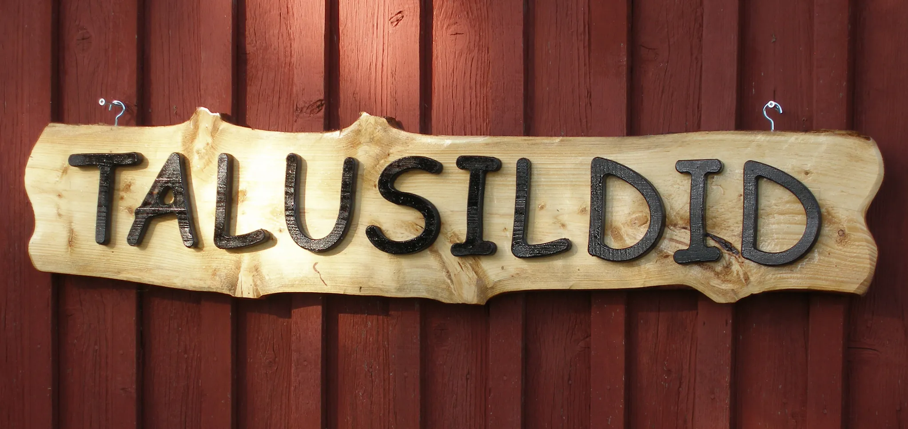
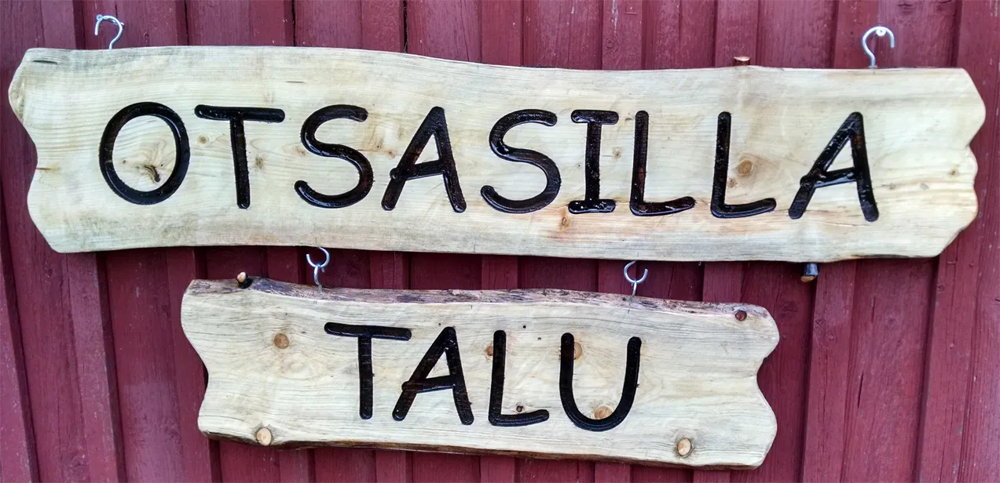

Käsitööna valmistatud puidust talusildid
Eestis on ilus traditsioon paigutada oma talu või suvekodu väravasse kohanimele vastav talusilt või viit. Valmistan CNC-pingiga erinevaid puidust silte!





Siltide valmistamise stiilid
-

Põdrakünka
90 €Tähed freesitud u. 10 mm sügavuselt ja töödeldud musta emailvärviga.
-

Uuepere talu
100 €Tähed paksusega 18 mm eraldi välja freesitud, töödeldud musta emailvärviga ja kinnitatud tihvtnaeltega plangule.
-

Padussoo talu
110 €Tähed paksusega 18 mm eraldi välja freesitud, töödeldud musta emailvärviga ja kinnitatud tihvtnaeltega 30 mm paksusele tammeplangule.
-

Liiduvere
95 €Tähed freesitud u. 10 mm sügavuselt ja töödeldud musta emailvärviga, plank põletatud gaasilambiga.
-

Rätsepa talu
110 €Tähed freesitud u. 10 mm sügavuselt ja töödeldud musta emailvärviga. Valmistatud 30 mm saareplangu peale.
Viimistlus
Sildid on enamasti töödeldud kahekordselt ilmastikukindla lasuuriga („REMMERS LASUR“). Lasuur ei ole lakk: erinevalt lakist ei kooru see aja jooksul maha. Aastas korra soovitatav hooldada.
Kliendi soovil saab kasutada ka heledat tõrvaõli (tõmbub aja möödudes halliks), värvi või paadilakki.
Remmersi lasuuri müüvad näiteks Espak, K-Rauta, Kaup24 ja Remmersi e-pood. Valikus on erinevad toonid, vaata Remmersi kodulehelt.
Eritellimused
Võimalik tellida kliendi enda väljavalitud kirjastiilis / fontiga silte.
Eritööde puhul hind kokkuleppel.
Mõõdud ja materjal
- Tähe kõrgus
- 140 mm
- Laua laius
- u. 200-300 mm
- Materjal
- Kuuse-, männi-, tamme-, saare- või remmelgaplank
Valikus erineva suurusega trüki- ja kirjatähed ning numbrid kas peitsitult või värvitult. Tähtede näidised.
Tähtede suuruse muutmisest tulenevalt võimalik muuta kogu sildi mõõtu vastavalt kliendi soovile.
Eraldi välja freesitud tähti saab teha kliendi soovitud mõõtudes, ka niiskuskindlast vineerist.
Võimalikud eritellimused, erinevad kirjastiilid (n. „Dannebrog“, „NEPTUN“) jne.
Tootmine Haapsalus, silte saab kätte ka Kuusiku talust (Leila küla, Lääne-Nigula vald). Saadan sildid kulleriga üle Eesti, kuni 64 cm pikkune silt mahub ka Omniva pakiautomaati!

Lisaks siltidele
Küttepuud
Müügil kuivad küttepuud.
- Puuliik
- sanglepp, hall lepp
- 40 L võrgus
- 30 cm
- 60 L võrgus
- 40 cm, hall lepp
- Lahtiselt
- 40 cm, 50 cm
Küttepuude transport Läänemaa, Harjumaa, Raplamaa ning Pärnumaa piires.
Vaata küttepuid